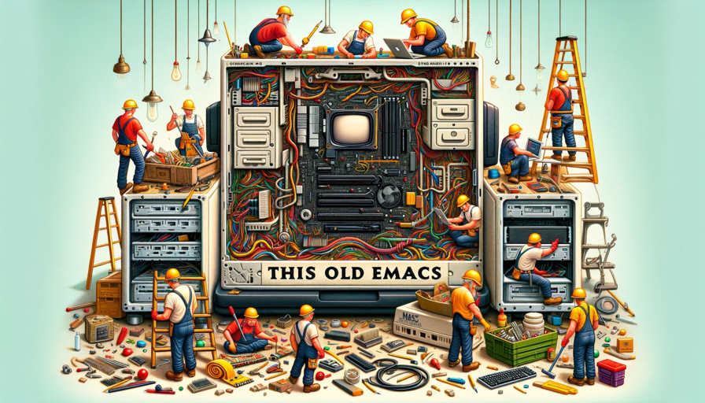

This Old Emacs
Table of Contents

Figure 1: Remodeling Emacs – It has good bones
1. I Love Emacs
I first got a copy of the Slackware Book in 1998 maybe give or take a year. Of course vi/m was installed by default and was always very cringe, but what could you do? Somewhere in the book or maybe online somewhere (back then I accessed the internet via a BBS and had to load all the protocols each time) was a description of emacs with maybe a screenshot (probably a word or two about nano etc.). Once I installed emacs, I have never looked back. I haven't used Windows or OSX anywhere but work since.
I have not really made full use of emacs for most of my emacs life. Oh sure keyboard macros etc. but really configuring emacs and writing lisp to make it do what I want, not so much. But that is what I find myself wanting to talk about now. How emacs has time and time again come to the rescue even when it was the result of a half hearted attempt on my part.
We will see how it goes.